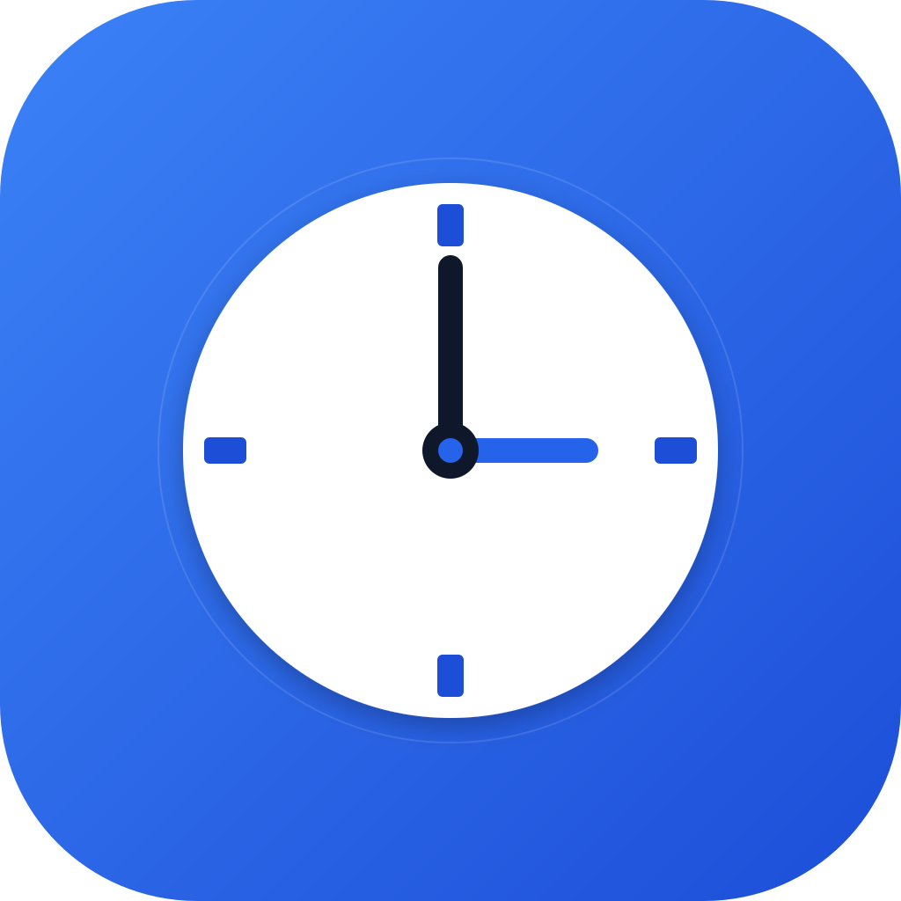
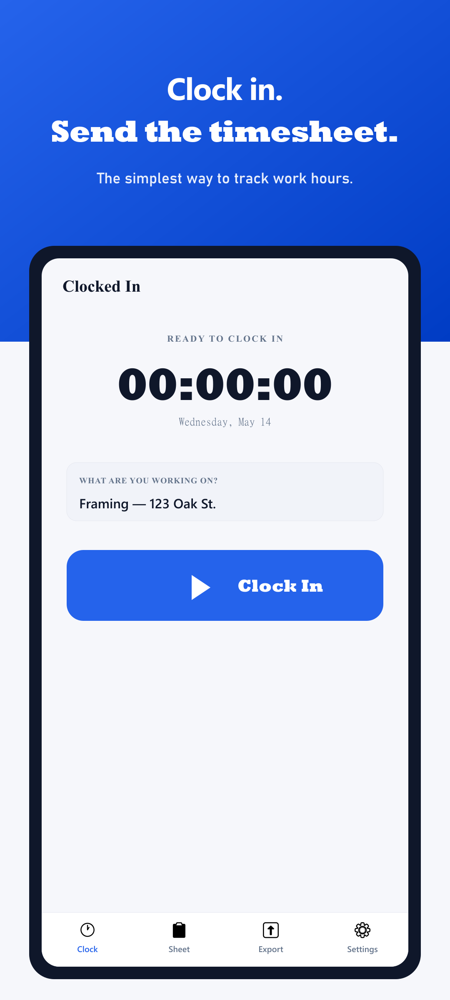
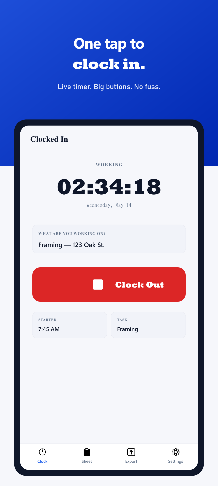
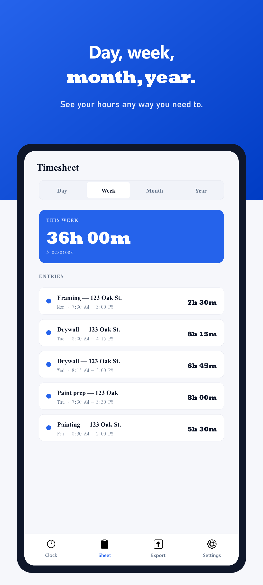
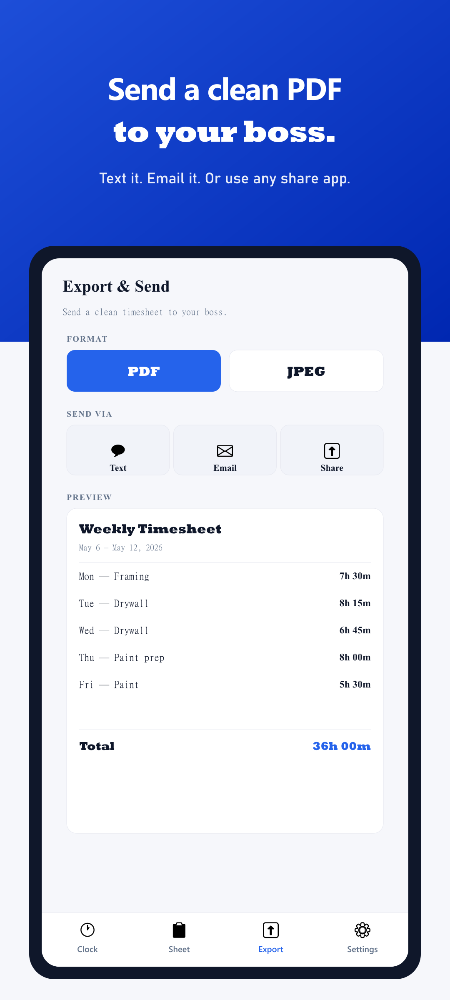
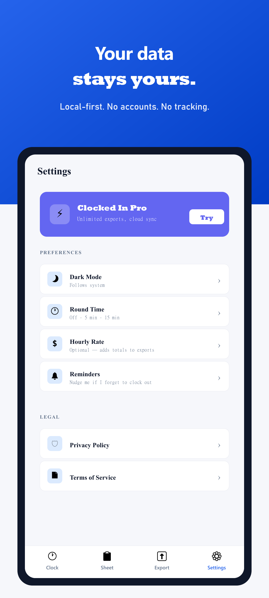
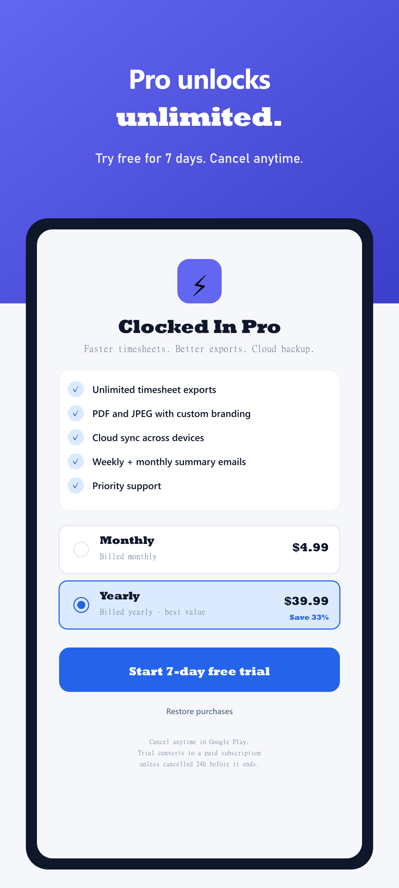

Clocked In — Press Kit
A privacy-first iPhone time card app for hourly workers, tradespeople, and freelancers. One tap to clock in. One tap to clock out. One tap to text a phone-readable PDF time card to your boss or client.
- Developer
- xADROCx1 (independent)
- Platform
- iOS 15+ (iPhone & iPad)
- Pricing
- Free with 3 PDF exports/month · Pro $1.99/mo or $14.99/yr · 7-day free trial
- Category
- Productivity
- Bundle ID
com.xadrocx1.clockedin- App Store
- apps.apple.com/us/app/clocked-in-timecard/id6771194765
- Press contact
- qwikkidd@yahoo.com
- Privacy policy
- /privacy.html
- Terms
- /terms.html
The pitch
Clocked In replaces the Friday-afternoon spreadsheet ritual that millions of hourly workers, tradespeople, and freelancers go through every week. Tap Clock In with a task name and hourly rate, tap Clock Out when the shift is over, and the app produces a polished, phone-readable PDF or JPEG time card ready to share through iMessage, email, or any other share target.
Every time entry lives on the device — there is no server, no analytics, no required account. A subscription on the App Store unlocks unlimited exports and JPEG output; everything else is free.
Why it exists
The hourly-worker side of the time-tracking market is full of apps that want logins, location tracking, cloud sync, or advertising identifiers for what is fundamentally a one-tap operation. Clocked In was built to do that one operation well, charge a fair price for unlimited use, and leave the rest of the user's data alone.
Key features
- One-tap clock in / clock out with a task description and hourly rate
- Editable entries — dates, times, wages, and task names can be corrected after the fact
- Weekly, monthly, and yearly views with hours and earnings totals
- Phone-readable PDF and JPEG exports sized so recipients don't have to zoom
- Share-sheet exports to iMessage, Mail, AirDrop, or any other target
- Optional Sign in with Apple so Pro restores across the user's devices (no name, no email stored — opaque identifier only)
- Local-first architecture — no servers, no analytics, no required account, no location, no ads
Pricing
- Free tier — 3 PDF exports per calendar month
- Clocked In Pro — $1.99/month or $14.99/year
- 7-day free trial on either Pro plan
- Annual is approximately 7 months of monthly — designed so the math reads at a glance
Privacy posture
Clocked In stores time entries only on the user's device. It does not run servers, does not collect analytics, does not track location, and does not include advertising SDKs. The App Store privacy label is Purchase History only, used for App Functionality and Analytics, not linked to identity, and not used for tracking.
Screenshots






Headline blurbs (drop-in)
- One-liner: Clocked In is a one-tap iPhone time card app for hourly workers, tradespeople, and freelancers — free to start, $1.99/month for unlimited exports.
- Two-liner: Clocked In is a privacy-first iPhone time card app. Tap to clock in, tap to clock out, then text a polished PDF of your week to your boss or client — without giving up another email address.
- Paragraph: Clocked In replaces the Friday-afternoon spreadsheet ritual that millions of hourly workers and freelancers do every week. The app tracks shifts and earnings on-device — no servers, no accounts, no analytics — and exports phone-readable PDF or JPEG time cards directly to the share sheet. Free for 3 exports per month; Pro is $1.99 a month or $14.99 a year with a 7-day free trial.
Founder note (attributable)
"I built Clocked In after watching my brother — a framer — fight with Excel every Friday to send his hours to the GC. He just wanted an app that did one job: clock in, clock out, text a PDF. Everything else got in the way." — xADROCx1
Asset downloads
Last updated: May 21, 2026. All assets © xADROCx1 and free to use in editorial coverage of Clocked In.
{kind=link}
{kind=link}
{kind=link}